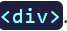
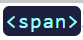

Tipos de Cajas
Estos dos tipos de cajas, existieron desde el principio de la web:
📦 Cajas de bloque (Block boxes)
Las cajas de bloque, por defecto, ocupan todo el espacio a lo ancho del contenedor.
El elemento HTML común para una caja de bloque es el elemento 
📦 Cajas en línea (Inline boxes)
Las cajas en línea, por defecto, toman el espacio según el contenido envuelto.
El elemento HTML más común para una caja en línea es el elemento 
Areas del Modelado de Cajas